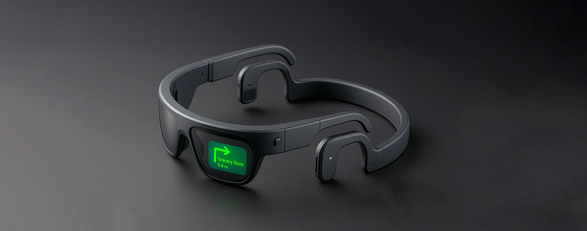
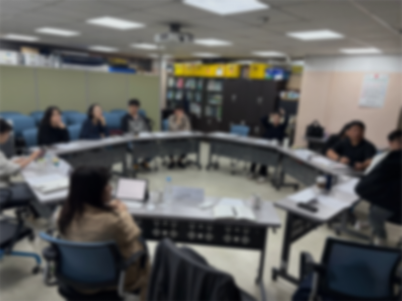
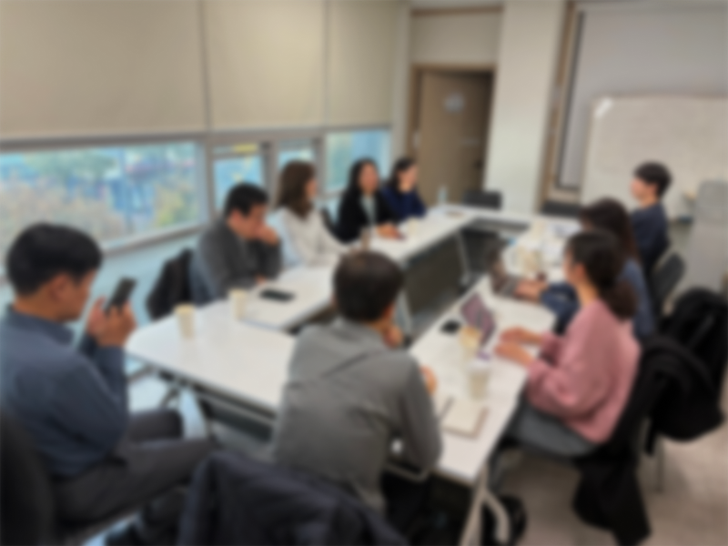
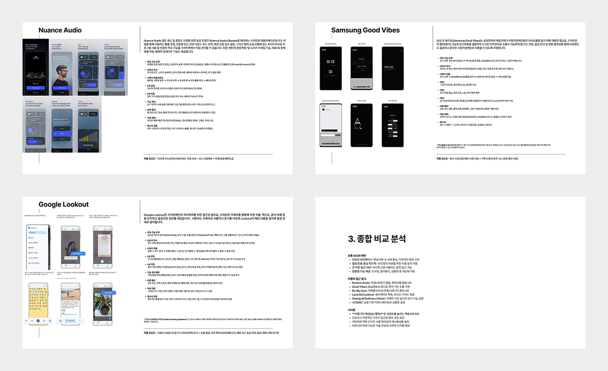
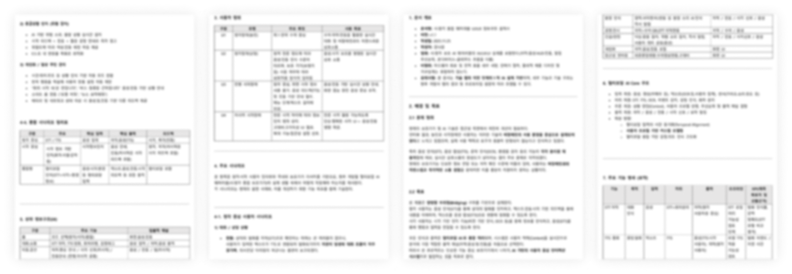
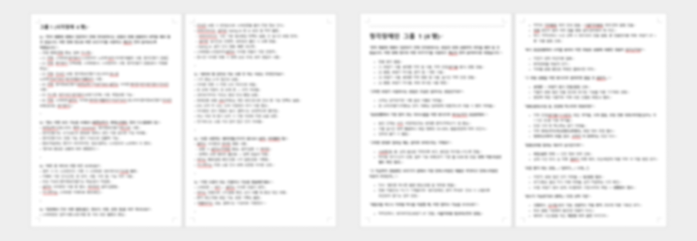
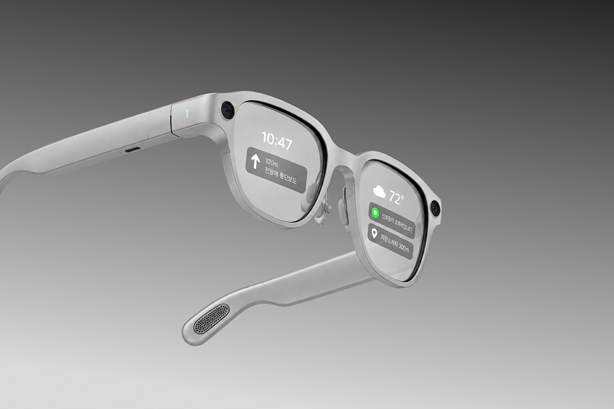
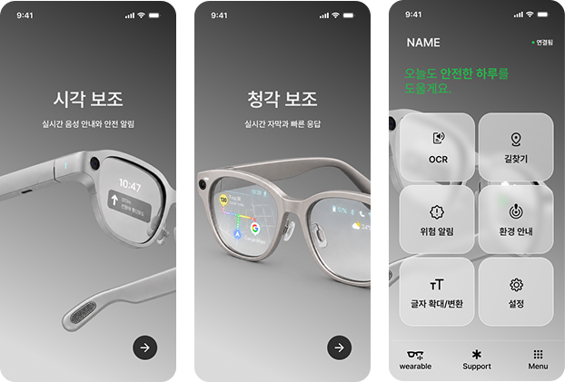

AI Smart
Glasses
시각/청각 보조를 위한 초개인화 주변상황 안내 웨어러블 디바이스 UX/UI
Figma
PowerPoint
UX Research
Benchmark Research
User Requirements
UX Planning
Information Architecture
Screen Definition
Wireframe
Initial UI Design
Documentation

AI 기반 웨어러블과 모바일 서비스를 디자인했습니다.
시각·청각장애인의 주변 상황 인지와 의사소통을 지원하는 AI 스마트 글래스 및 모바일 애플리케이션의 UX/UI를 설계했습니다.

4년차 R&D 과제를 앞두고,
UX/UI 설계부터 초기 UI 디자인까지 구체화했습니다.
프로젝트는 4년차 과제로 예정되어 있었으며,
2년차 당시 UX/UI 설계가 시작되지 않은 상태였습니다.
퇴사 전까지 사용자 인터뷰와 리서치를 바탕으로 주요 기능과 사용자 흐름을 정리하고,
와이어프레임을 고도화한 뒤 주요 화면의 초기 UI 디자인까지 진행했습니다.
R&D 진행
UX/UI 설계 시작
- User Interview
- UX Research · Benchmark
- User Requirements
- UX Flow · IA
- Wireframe · Initial UI
고도화 예정
- UX/UI 고도화
- 기능 및 화면 확장
R&D 과제 진행 예정
- 서비스 구현 및 개발
- UX/UI 고도화 예정
사용자 인터뷰와 서비스 리서치를 통해 주요 요구사항을 정의했습니다.
사용자 인터뷰와 국내외 접근성 서비스 및 AI 기반 보조 서비스의 사례를 조사하고, 이를 바탕으로 서비스의 주요 요구사항과 UX 방향을 정리했습니다.
실제 사용자 인터뷰를 통해 주변 상황 인지와 의사소통 과정의 요구사항을 확인했습니다.


인터뷰와 리서치 결과를 바탕으로 서비스에 필요한 핵심 요구사항을 정리했습니다.

접근성과 웨어러블 서비스의 주요 사례를 조사했습니다.
국내외 접근성 서비스와 AI 기반 보조 서비스의 UI 구성 및 주요 기능을 조사하고, 프로젝트에 적용할 수 있는 디자인 방향을 정리했습니다.

Nuance Audio
스마트 보청기
환경별 프리셋
자동 프리셋 추천
Samsung Good Vibes
촉각 의사소통
화면 최소화
진동 패턴 지원
Be My Eyes
AI 시각 지원
단순한 홈 화면
긴급 도움 기능
Google Lookout
OCR · 사물 인식
카메라 중심 UI
자동 촬영
Seeing AI
AI 시각 보조
모드 기반 UX
자동 모드 추천
Sullivan Plus
AI OCR
음성 중심 UX
연속 읽기
사용자 요구사항을 바탕으로 서비스의 핵심 방향을 정의했습니다.
실시간 정보 전달이 가장 중요
주변 상황을 즉시 전달받을 수 있는 정보 제공 방식이 필요했습니다.
여러 기기 사용의 불편
여러 기능을 각각 사용하는 것보다 하나의 기기로 통합된 경험이 필요했습니다.
상황별 맞춤 기능 필요
이동, 대화, OCR 등 상황에 따라 필요한 기능이 달라졌습니다.
간단한 조작 선호
복잡한 UI보다 빠르게 실행할 수 있는 직관적인 인터페이스가 필요했습니다.
서비스 구조와 화면의 관계를 설계했습니다.
사용자 요구사항과 주요 기능을 바탕으로 서비스 구조와 화면 계층을 정의하고 Information Architecture를 설계했습니다.

주요 기능과 화면을 구체적인 UX로 설계했습니다.
Information Architecture를 기반으로 주요 기능의 화면 구성과 사용자 흐름을 정의하고 각 화면의 역할과 정보를 구체화했습니다.
화면의 역할과 기능을 정의했습니다.

주요 기능의 화면 구성과 사용자 흐름을 구체화했습니다.

UX 설계를 바탕으로 초기 UI 디자인을 구체화했습니다.
정의된 사용자 흐름과 기능을 바탕으로 AI 스마트 글래스의 비주얼 컨셉과 모바일 애플리케이션의 초기 UI를 설계했습니다.
웨어러블 디바이스의 AI 기반 시각적 컨셉을 구체화했습니다.

시각 보조와 청각 보조를 중심으로 주요 모바일 화면을 디자인했습니다.
